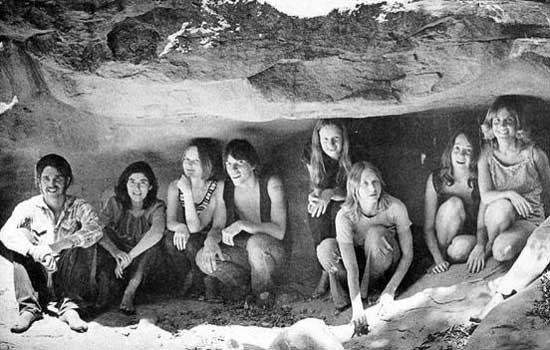

The Manson Family
Charles Manson is considered to be one of the most disturbed, ruthless and clincally-insane men on the planet, again depending who you ask (he recently was just married while serving his life sentence in prison to a devout fan outside). This story is so complex and intriguing that it is hard to even know where to start. Basically, this man, a failing musician in California who had close ties to members of the worldwide superstars The Eagles, gained a small devout following and called them his family. They lived on a ranch for some time, committing countless acts of terror and violence, some proven others discarded, on the local California community. The famous case is the Tate murders, which can be further explained in the link.
But it wasn't the sheer violence that Manson carried out that made him and his family so famous. It was the reasoning and logic behind it; they felt no remorse and openly admitted to the crimes because it was what Manson wanted, who was believed to be their savior or a messiah figure. The photo below shows a handful of his close family members in an infamous shot in a cave that they spent many nights planning and discussing the group's beliefs and responsibilities.

The full Charles Manson story can be read here on the Wikipedia site.